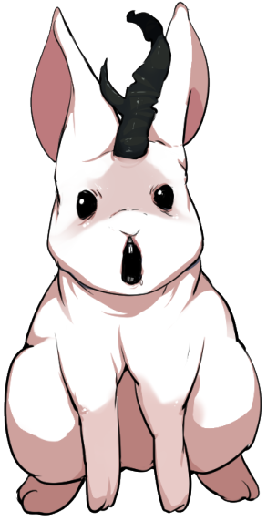
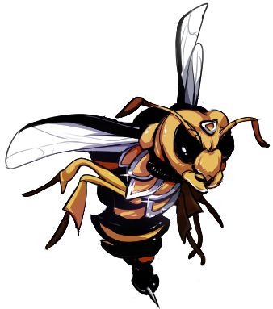
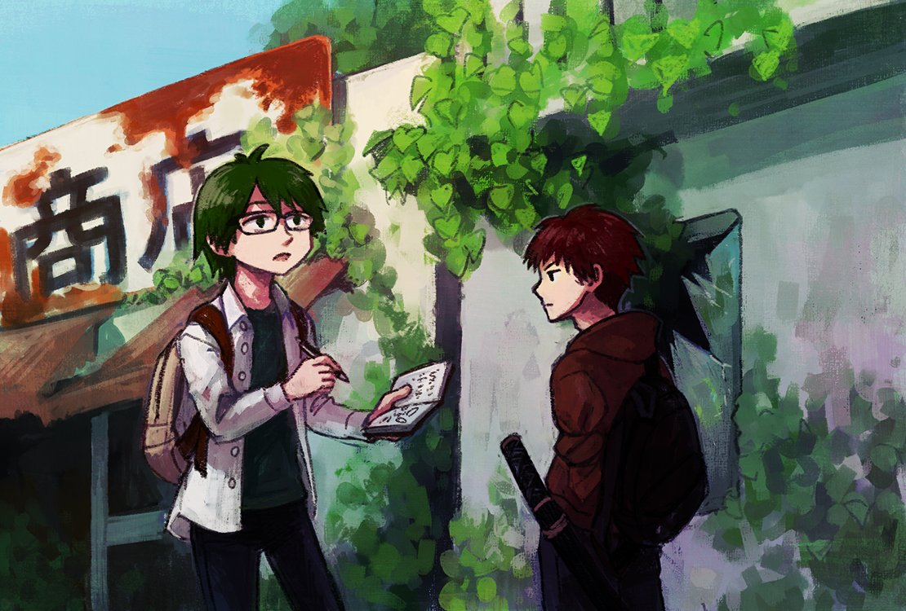

アイテム一覧
1日分の食料。【気力】が1点増加する。通貨単位J。
缶詰1つ。文明の味。【気力】が【精神力】点増加する。通貨単位10J=1C。
総重量4まで袋の中にアイテムを入れることができる。袋の中のアイテムの重量は所持限界から無視する。
総重量10まで袋の中にアイテムを入れることができる。袋の中のアイテムの重量は所持限界から無視する。
総重量20まで袋の中にアイテムを入れることができる。袋の中のアイテムの重量は所持限界から無視する。
総重量4まで袋の中にアイテムを入れることができる。袋の中のアイテムの重量は所持限界から無視する。戦闘中でも袋の中のアイテムを使用できる。
総重量5まで袋の中にアイテムを入れることができる。袋の中のアイテムの重量は所持限界から無視する。戦闘中でも袋の中のアイテムを使用できる。
攻撃力3。総重量5まで袋の中にアイテムを入れることができる。袋の中のアイテムの重量は所持限界から無視する。
攻撃力5。死神が振るうような鎌、或いは、大地を耕す鍬。
攻撃力1。先制判定の達成値にプラス1の修正がつく。この武器は割込みのタイミングで装備できる。取り回しやすい本格的なナイフ。
攻撃力4。命中判定でスペシャルを振った場合、攻撃力にプラス1D6する。
攻撃力1。この武器は割込みのタイミングで装備できる。この武器は破壊して死亡判定をキャンセルできない。
攻撃力2。《投げる》を使って判定した場合、手元から失われる。支援行動で回収できる。
攻撃力2。所持していると《雑学》の判定の達成値にプラス1の修正がつく。
攻撃力2。投石器。弾にする石は何処でも手に入るため明記不要。石以外も投げることができる。装備している間、回避判定にプラス1の修正がつく。
攻撃力3。矢が必要。装備している間、回避判定にプラス2の修正がつく。
攻撃力2。この武器によるダメージは軽減されない。さらに、『麻痺』の変調を与える。
攻撃力2。ドロップ表の結果にプラス1の修正がつく。
攻撃力3。変調を持つ相手へのダメージをプラス1。変調が2つなら+3、4つ以上で+6。
攻撃力3。自身の体力が1以下の時、攻撃力プラス3。
攻撃力2。先攻での攻撃時、命中判定にプラス1と攻撃力にプラス2の修正がつく。
攻撃力0。回避判定の達成値にプラス1の修正がつく。
頭部分野の《身体部位》への部位ダメージをキャンセルすることができる。そうした場合、このアイテムを破壊する。
胴部分野の《身体部位》への部位ダメージをキャンセルすることができる。そうした場合、このアイテムを破壊する。
ポケットのたくさんついたジャケット。所持限界プラス1
腕部分野の《身体部位》への部位ダメージをキャンセルすることができる。そうした場合、このアイテムを破壊する。
脚部分野の《身体部位》への部位ダメージをキャンセルすることができる。そうした場合、このアイテムを破壊する。
《探索》の達成値にプラス1の修正がつく。明るく照らす。暗闇のペナルティを打ち消す。
あなたが装備しているか所持しているアイテム1つを「充電」できる。
キャンプの仲間と通信し、【気力】を2点増加させる。
探索フェイズに使用可能。全員の【気力】を1D3点増加させる。
ボウガンの矢。これを所持していないとボウガンの効果をうけることができない。ボウガンで命中判定を行うごとに1消費する。
名前に『矢』のつくアイテムを3束（使用回数30回分）まで入れることができる。袋の中のアイテムの重量は所持限界から無視する。戦闘中でも袋の中のアイテムを使用できる。
スリングで投げることができる。攻撃の対象に『麻痺』の変調を与える。
丈夫なロープ。使い方次第で休憩しやすくなったり障害の突破に。
火をつけるには火付け道具が必要、戦闘中の点火は支援行動。効果は1サイクル。暗闇のペナルティを打ち消したり蜘蛛の巣を燃やしたり。
マッチやライター、火打ち石とほくちのセットなどのこと。焚き火があれば休憩しやすくなる。
キャンプや水場で水を補充できる。水が補充されている場合、いつでもリミットの増加を試みることができる。一度使うと水はなくなる。空なら重量3、水を満タンにすると重量は8となる。
川や池を見つけた時に使用出来る。指定特技の判定に成功すると1Jを得る。
使用するときに1D6を振る。出目が偶数の場合、【体力】が2点増加する。奇数の場合、2点のダメージを受ける。
透き通った硬い羽。武器防具以外に窓ガラスの修理にも。
行為判定
キャラクターが成功するか失敗するか分からない行動をとったときには行為判定を行います。
行為判定の流れ
行為判定は以下の順番で行います。
A:指定特技の決定
行為判定を行う場合、ゲームマスターがその行為判定に使うのにふさわしい特技を選んで決定します。これを《指定特技》といいます。
アビリティを使用するときの行為判定などは、
あらかじめルールで特技が指定されています。
B:特技の確認
プレイヤーは、決定された特技を自分のキャラクターが習得しているかどうかを確認します。
指定された特技を習得していなかった場合、習得している特技の中から、《指定特技》に最も近いものを探します。そして、探し出した特技をスタート地点として
《指定特技》まで上下左右に何マス離れているか数えて下さい。特技リストの各分野の
間にあるギャップも1マスと数えます。
ただし、塗りつぶされているギャップはないものとして扱います。
こうして、習得している特技で別の特技の判定を行うことを、特技の代用による代用判定といいます。
C:目標値の確認
行為判定の目標値を算出します。目標値が高ければ高いほど、その行為判定は難しいことになります。
行為判定の目標値は「5＋習得している特技から《指定特技》までのマス数」です。習得している特技が《指定特技》と同じ場合、マス数は0です。
D:サイコロを振る
目標値の算出が終わったら2D6を振ります。その目が目標値以上であれば、行為判定は成功です。目標値未満の目が出た場合、行為判定は失敗です。
2D6 ≧ 目標値 成功！
2D6 < 目標値 失敗！
このようにして行為判定で行動の成功と失敗が決まります。
また、行為判定には「修正」「特別な出目」「プレイヤーの提案」という3つの特例があります。
修正
成功しやすい行動や失敗しやすい行動には修正が発生する可能性があります。成功しやすい行動にはプラスの修正がつき、失敗しやすい行動にはマイナスの修正がつきます。
判定に修正がついた場合、2D6の目に修正の値を加えます。2D6に修正を加えた値を達成値と呼びます。
達成値が目標値以上の場合、行為判定は成功となります。
特別な出目
行為判定で特別な出目を出すと、特殊な状況が発生します。特殊な出目にはファンブルとスペシャルがあります。
○ファンブル
行為判定で2D6の出目が2つとも1だった場合、ファンブルが発生します。ファンブルとは思いもよらぬ大失敗です。
修正により達成値が目標値以上になったとしても、
必ず行為判定は失敗になります。
命中判定や回避判定でのファンブルでは、さらにファンブル表を振りその効果を適用します。
判定へのマイナス修正によってファンブルが起こることはありません。
大失敗からは得るものも多いです。結果フェイズで、[ファンブル回数]点の経験点を得ます。ファンブルの回数はメモしておきましょう。
○スペシャル
行為判定の2D6の出目が2つとも6だった場合、スペシャルが発生します。スペシャルとは偶然に助けられた素晴らしい成功です。達成値が目標値未満だったとしても、
必ず行為判定は成功になります。
スペシャルが発生した場合、【気力】が1D6点増加し、変調が1つ解除されます。
命中判定でのスペシャルでは、さらに 命中判定スペシャル表 を振りその効果を適用します。
判定へのプラス修正によってスペシャルが起こることはありません。
命中判定スペシャル表
| d6 |
説明 |
| 1 |
渾身の一撃！ 与えるダメージにプラス1D6されます。 |
| 2 |
スキマを直撃！この攻撃によるダメージは軽減されません。 |
| 3 |
鋭い太刀筋！ 武器の攻撃力を2倍としてダメージを算出します。 |
| 4 |
強力な一撃が相手を揺るがす！ 対象に『転倒』の変調を与えます。 |
| 5 |
みなぎる力！【気力】が1D6点増加します。 |
| 6 |
チャンス！ あなたは追加行動を得ます。 |
プレイヤーの提案
プレイヤーは、ロールプレイによって《指定特技》の変更を提案することができます。
プレイヤーは、まずキャラクターが特技をどのように使って技能判定を行うか、具体的に説明します。
ゲームマスターが説明に納得した場合、《指定特技》は変更されます。また説明の内容によっては、修正をいれて判定を行わせることもできます。
相応しいロールプレイを行い、行為判定の処理を続けてください。
納得できなかった場合、
ゲームマスターは提案を拒否することができます。
例1：撤退判定を行う時、プレイヤーから周囲に物が多いので《指定特技》を《隠れる》に変更できないか、と提案されました。戦闘が障害物の多い建物で行われていたため、GMは納得し、指定特技の変更を許可します。PCは棚の後ろに隠れ、屈みこんでやり過ごして逃げて行きました。
例2：撤退判定を行う時、プレイヤーから周囲に茂みが多いので《指定特技》を《隠れる》に変更できないか、と提案されました。戦闘が森の中で行われていますが、音の立てやすい茂みに隠れてやり過ごすのは難しいと感じたため、マイナス3の修正で《隠れる》で判定することを許可しました。
判定するときしないとき
ゲームマスターは、セッションが楽しくなるように、判定を行うかどうか判断します。
判定するとき
- キャラクターが成功するか失敗するか分からない行動をとったとき
- ダイスを振ったほうが盛り上がるとき
判定しないとき
- キャラクターの行動が確実に成功するとき
- キャラクターの行動が確実に失敗するとき
- キャラクターの行動の成否が問題にならないとき
- ダイスを振っても盛り上がらないとき
キャンプフェイズ
冒険者のキャンプでの行動を処理するフェイズです。
このフェイズでは事件の発端と探索の準備を行います。
プロローグ
キャンプフェイズが始まったら、GMはプロローグの処理を行います。
ここでは、シナリオの背景や＜フィールド＞へ冒険者たちが向かうための動機を描写します。
また、探索フェイズが何サイクルで終了するかのリミットを伝えて下さい。
主な動機として、物資の調達、他のキャンプへの護衛、迷い込んだ仲間の救出、＜フィールド＞の
拡大を防ぐなどが考えられるでしょう。
シナリオによっては判定や戦闘を行なえます。探索に出るまでの経緯を簡単に説明するだけでもよいです。
行動の処理
プロローグが終了すると、各キャラクターは探索の準備をすることができます。
行動の処理は1サイクルです。
各キャラクターは以下の行動から1つ選んで行動の処理を行なって下さい。
- 散策
-
2D6を振って、散策表の結果を適用します。
複数人が散策を行い、同じ結果が出た場合、表の効果は重複します。複数人が散策を行い、同じ結果が出た場合、表の効果は重複します。
散策表
| 2d6 |
結果 |
| 2 |
出発前の宴だ！カンパーイ！全員の【体力】が2点増加します。 |
| 3 |
キャンプの仲間に成長の兆しがみえます。結果フェイズで人材を獲得する際の必要CPが-1されます。 |
| 4 |
今回の＜ヌシ＞にキャンプの仲間がやられたことがあります。セッション中に一度だけ、＜ヌシ＞へのダメージ決定時にダメージを2点増加させることができます。また、あなたの攻撃で＜ヌシ＞が死亡した場合、あなたは経験点を1点獲得します。ダメージを1点も与えることができなかった場合、あなたの獲得できる経験点は1点減少します。 |
| 5 |
キャンプに新たな仲間が増えました。名前をつけてあげてと頼まれます。【気力】が2D6点増加します。 |
| 6 |
子供たちが元気に遊んでいるところに遭遇しました。【気力】が1D6点増加します。 |
| 7 |
キャンプに食料が足りていないことを相談されます。セッション中に食料を5個手に入れるたび、全員の【気力】が1点増加します。また、10個以上手に入れた場合、全員は経験点を1点獲得します。1つも手に入れられなかった場合、全員の獲得できる経験点が1点減少します。 |
| 8 |
配給係から食料を多めに準備してもらえました。リミットが1サイクル増加します。 |
| 9 |
キャンプの奥から掘り出しものが出て来ました。1D6を振り、1、2ならバッテリー、3、4なら1J、5ならほうちょう、6なら缶詰を手に入れます。 |
| 10 |
他のキャンプから商人がやってきています。結果フェイズで報酬獲得後、任意個のアイテムを取引できます。 |
| 11 |
キャンプの大工が張りきっています。結果フェイズで獲得する施設の必要CPが-1されます。ただし１未満にはなりません。 |
| 12 |
嵐の気配。キャンプの補修に使える材料を集めてきて欲しいと頼まれます。結果フェイズに1CPを消費して嵐への備えを行えます。嵐への備えができない場合、キャンプの施設が1つランダムに破壊されます。また、このセッション中、探索フェイズで行える行動に＜資材集め＞が追加されます。＜資材集め＞は支援行動として扱い、《探索》の判定に成功するとCPを1点得ることができます。 |
- 施設の利用
- キャンプにある施設の効果を使用します。
- 人材の利用
- キャンプにいる人材の効果を使用します。
- アビリティなどの使用
- タイプが支援のアビリティやアイテムを使用します。
- パス
- 特に何もしません。
探索フェイズ
探索フェイズは、キャンプから目的の＜フィールド＞に侵入し、
訪れる場所である＜チェックポイント＞ごとに障害の突破と探索を繰り返すフェイズです。
探索フェイズにはリミットが存在し、
プロローグで伝えられたリミットのサイクルが経過すると終了します。
冒険者は探索フェイズの終了までに＜チェックポイント＞を辿り、
＜ヌシ＞のいる所まで辿り着いてください。
探索フェイズの1サイクルは「移動」→「描写」
→「行動の処理」の順に処理を行います。探索フェイズの1サイクルで経過する時間は
およそ1日が目安です。GMの任意で1サイクルの時間は自由に調整してかまいません。
GMは サンプルシナリオ2:嵐の濁流のチャートも参考にしてください。（※PLはネタバレ注意)
移動
隣接する＜チェックポイント＞へ移動します。
ただし、その間に＜障害＞が設置されている＜チェックポイント＞への移動は行えません。
移動の際には敵の遭遇が発生する可能性があります。
GMはランダムエンカウント表Aを振り、その結果を適用してください。
移動はパスすることもできます。その場合ランダムエンカウントは発生しません。
障害の突破が行えなかったなどの理由で、次の＜チェックポイント＞に向かえない時には移動をパスしてください。
ランダムエンカウント表A
| d6 |
説明 |
| 1 |
ツノウサギ[1D6+PT人数]体と戦闘になります。 |
| 2 |
ナガムカデ[1D3]体と戦闘になります。 |
| 3 |
ヨロイバチ[PT人数÷2]体と戦闘になります。 |
| 4 |
ゾンビ[1D6]体と戦闘になります。 |
| 5 |
オニトンボ[1D6+PT人数]体と戦闘になります。 |
| 6 |
ランダムエンカウント表Bを振ります。 |
ランダムエンカウント表B
| d6 |
説明 |
| 1 |
なにもなし |
| 2 |
デブドリ[1d6]体と戦闘になります |
| 3 |
冒険商人と出会います。1人1つアイテムを買うことができます。 |
| 4 |
他の冒険者と出くわし、語らいます。全員【気力】が1D6点増加します。 |
| 5 |
屍を見つけます。ほうちょうを1つ手に入れます。 |
| 6 |
休憩できる「水場：リミット増加用オブジェクト」を見つけます。全員【体力】が1点増加します。 |


描写
＜チェックポイント＞の描写を行います。
＜チェックポイント＞とは、＜フィールド＞に存在する構造物や地形で、
冒険者たちが訪れる場所のことです。
GMは＜チェックポイント＞がどのような場所か、何があるか、道はどちらに続いているか、
どんな生き物がいるか、などの説明をします。
その場所にいる生き物によっては戦闘になる可能性もあります。
また、他の冒険者や行商人などとは交渉が発生する場合もあります。
場所によっては特殊な効果が発生することもあります。例えば、寒い場所なので行為判定マイナス1、花畑なので休憩時【気力】プラス1などです。
風景描写・戦闘・交渉などが終わったら、行動の処理になります。

行動の処理
各キャラクターは以下の行動から１つ選んで、
行動の処理を行います。
- 障害の突破
- 障害の突破を試みます。
- 探索
- 森の探索を行いアイテムを入手します。
- 休憩
- 休んで【気力】を増加させます。
- 支援行動
-
支援タイプのアビリティやアイテムを使用します。
または、GMが支援行動とみなした行動を行います。
- オブジェクトへの接触
-
＜チェックポイント＞にあるオブジェクトに対して行動します。
オブジェクトとは、木や建物、人物や動物などGMがオブジェクトとして設定したものをいいます。
オブジェクトへの接触で何が起こるかはGMが決めます。
- パス
- 特に何もしません。
■障害の突破
＜障害＞
GMは新たな＜チェックポイント＞へ続く道に任意の数の＜障害＞を設置できます。
＜障害＞ごとに突破するための《指定特技》を決定してください。
同じ＜障害＞を複数設置することも可能です。
また、2つの道を塞ぐように＜障害＞を設置することも可能です。
突破
冒険者は、＜障害＞に設定された《指定特技》の判定に成功することで、
障害を1つ突破できます。これを突破判定と呼びます。
新たな＜チェックポイント＞への道に設置された＜障害＞が全て突破されるまで、
その＜チェックポイント＞へは移動できません。＜障害＞が全て突破された時、GMは
道の先の＜チェックポイント＞の簡単な説明をしてください。
道の先に＜ヌシ＞がいる場合、そのことも伝えて下さい。
《指定特技》の変更
プレイヤーは、突破判定の《指定特技》の変更を提案することができます。
GMはその提案を聞き、納得した場合、《指定特技》を提案されたものに変更します。

■探索
アイテムの探索
2D6を振り、探索表の結果を適用します。
探索表
| 2d6 |
説明 |
| 2 |
侵食がすすまず、そのままキャンプの施設に使えそうな建物を発見する。 問題は、ここまで道が引けるかだが……。《地理/環境2》の判定に成功すると、 現在キャンプにある施設1つのレベルを上げることができる。 |
| 3 |
これは、施設の材料に使えるんじゃないか？ 《雑学/技術6》の判定に成功すると、CPを1点得る。 |
| 4 |
「シェルター：リミット増加用オブジェクト」を見つける。 ここでは休憩がしやすそうだ。《休む/環境7》の判定に成功すると、休憩表を振ってその効果を適用した上に、【体力】が1点増加する。 |
| 5 |
「泉：リミット増加用オブジェクト」をみつける。泉にはかつての民家が水没している。その底にきらり光るものが。 《泳ぐ/脚部2》の判定に成功した場合、1D6をふる。出目が1～3の場合、棍棒を1個手に入れる。4,5の場合、なべぶたを1個手に入れる。 6の場合、なべを1個手に入れる。 |
| 6 |
たぶんコカの葉が生えている。 《鑑定/技術4》の判定に成功すると、「コカの葉」を1個手に入れる。 失敗した場合、「なぞの葉」を[1D3]個手に入れる。 |
| 7 |
腰掛けるのに丁度いい場所をみつけ、そこから風景を眺めながら仲間1人と語り合う。 1D6を振って話のテーマを決める（1.失った/失いたくないもの、2.キャンプのこと、3.今回の冒険、4.欲しいもの、5.過去、6.恋バナ）。 その後、仲間を1人選び、話をする。話ができたら、あなたは[【生命力】の半分]点、仲間は1点【体力】が増加する。 話が浮かばない場合、《聞く/頭部2》の判定に成功したら、 【体力】を獲得してもよい。 |
| 8 |
この辺りは森が茂っている。 キノコ、野草、木の実、ウサギ……《探索/技術3》に成功すると、[1D6]Jを手に入れる。 |
| 9 |
探索中、足元が抜ける。部屋の天井が脆くなっているところに落ち葉が積もっていたようだ。 《落ちる/胴部10》の判定に成功すると、うまく着地し部屋の探索を行える。価格3J以下のアイテムを 1個手に入れる。失敗した場合、1点のダメージをうけ、探索している場合ではない。 仲間に助けてもらうこと。 |
| 10 |
野鶏クルックコッコをみつける。《歌う/技術12》の判定に成功すると、クルックコッコは 卵を産む。栄養価は満点だ。全員の【体力】が1点増加する。 |
| 11 |
崩れてダンジョンのようになった廃屋をみつける。 《探索/技術3》の判定に成功すると、[達成値]J以下のアイテムを1個手に入れる。 |
| 12 |
森のざわつく気配。《見つける/頭部4》の判定を行う。 成功すると、＜ヌシ＞を遠目で眺め、来る決戦に身を引き締める。【体力】が【生命力】点増加する。 失敗した場合、あなたと＜ヌシ＞は1ラウンドのみ1対1で戦闘する。 |

■休憩
2D6を振り、休憩表の結果を適用します。
休憩表
| 2d6 |
説明 |
| 2 |
茂みががさがさとなっている。《隠れる/環境6》の判定に失敗すると、ランダムエンカウント表を振る。成功した場合、【気力】が[【精神力】の半分]点増加する。 |
| 3 |
地上に安全なところが見つからない。木の上で休まなければ。《バランス/環境8》の判定に成功すれば、【気力】が3点増加する。失敗した場合、落下して1点のダメージを受ける。「ロープ」があれば、判定の必要なく休むことができる。 |
| 4 |
ケモノの声がうるさい。あなた以外の誰か1人を見張りとして選ぶ。見張りが《聴く/頭部2》の判定に成功しないとあなたは休めない。休めた場合、あなたの【気力】が4点増加する。 |
| 5 |
今夜はとても冷える。「毛布」か「寝袋」があれば【気力】が3点増加する。「火付け道具」があれば【気力】が3点増加する。 |
| 6 |
雨が降ってくる。雨宿りできるものがあるか、《見つける/頭部4》の判定に成功すれば休める。休むと、【気力】が3点増加する。「火付け道具」があれば、さらに【気力】が3点増加する。 |
| 7 |
眠れない夜。仲間1人と語り合う。1D6を振って話をテーマを決める（1.悩み、2.将来・夢、3.好きなもの、4.嫌いなもの、5.過去、6.恋バナ）。その後、仲間を1人選び、話をする。話ができたら、あなたは[【精神力】の半分]点、仲間は2点【気力】が増加する。話が浮かばない場合、《伝える/技術11》の判定に成功したら、【気力】を獲得してもよい。 |
| 8 |
目が覚めたら、仲間の料理がちょうどできていた。【気力】を3点増加させる。さらに、料理当番として仲間を1人選ぶ。料理当番が《料理/技術10》に成功した場合、全員が2点の【気力】を増加させる。失敗した場合、全員の【気力】が1点減少する。 |
| 9 |
仲間と模擬戦をしてから眠りにつく。【気力】が3点増加する。相手として仲間1人を選ぶ。相手が《振る/腕部11》の判定に成功すると、次の戦闘であなたの与えるダメージが1点増加する。 |
| 10 |
あなたは泥のように深く眠る。【気力】が[【精神力】の半分]点増加する。眠ったあなたの荷物を狙ってネズミリスがやってくる。仲間を1人選ぶ。選ばれた仲間は《反応/頭部5》の判定を行う。成功すると1Jを得る。失敗した場合、あなたの所持品が1つランダムに失われる。 |
| 11 |
野営に最適な場所を見つけ、気持ちよく寝ることができる。【気力】が[【精神力】の半分]点と【体力】が1点増加する。そして幸せだった時代の夢をみる。あなたは幸せそうなシチュエーションを考え、仲間やGMに伝える。その夢が、幸せそうだと感じる者がいたら、さらに【気力】が3点増加する。 |
| 12 |
森のざわつく気配。《予感/頭部9》の判定を行う。成功すると、＜ヌシ＞を遠目で眺め、来る決戦に身を引き締める。【気力】が【精神力】点増加する。失敗した場合、あなたと＜ヌシ＞は1ラウンドのみ1対1で戦闘する。 |
■アビリティなどの使用
支援タイプのアビリティやアイテムを使用できます。
■オブジェクトへの接触
オブジェクトを調べたり、会話したりできます。GMは判定が必要な場合、《指定特技》を決定し、
成功したら何が起こるか決めておいてください。
例1：オブジェクトの行商人から買い物を行う。
例2：オブジェクトの果物の木から収穫する。指定特技は《掴む/腕部7》で成功すると果物(2J)を得る。
例3：オブジェクトの商店街を探索する。1D6を振って商店街探索表を参照する。「1:何もなし/2,3:食料発見(1J)/4,5:嗜好品/6:好みのおもちゃ発見(気力+3)」
■パス
なにもしません
リミット
探索フェイズのサイクル数にはリミットが定められています。これは、冒険者たちが所持している
食料の残量や疲労による探索の限界を表しています。リミットであるサイクルが終了するまでに、
＜ヌシ＞のいる場所への＜障害＞を突破できていない場合、セッションは失敗となります。
リミットのサイクル数は、[＜チェックポイント＞の数+1]程度が目安です。
キャラクターの人数や＜障害＞の数で増減してください。
リミットの増加
GMは＜チェックポイント＞に、「水場」や「シェルター」など安全に休めそうなオブジェクトを「リミット増加用オブジェクト」として設置できます。
リミット増加用オブジェクトがある場合、
人数分の食料を消費し、誰か1人が指定特技《休む／環境7》の判定に成功することでリミットを1増加させることができます。
リミットの増加は試みる度にマイナス[リミットの増加を試みた回数]の
修正がはいります。最初の挑戦なら修正なし、
2回めにはマイナス1、3回めはマイナス2…のようになります。
リミットの増加は割込み行動として1サイクルに1度行うことができ、試みても行動済みとなりません。